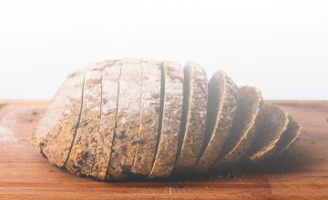
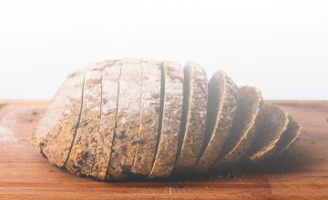

ФЛЮТ® Адванс
Местное обезболивающее средство при геморрое и других проктологических заболеваниях.
Инструкция


Ректальные суппозитории с бензокаином
Быстрый обезболивающий эффект (1-3 мин)

Имеют натуральную основу - масло какао
Доступная цена


Что такое геморрой?
Геморрой — самое распространенное колопроктологическое заболевание. Геморроем страдают в среднем 14 человек из 100, а его удельный вес среди болезней прямой кишки составляет около 40 %. Причем мужчины болеют в три раза чаще, чем женщины. Если запор называют «болезнью интеллектуалов», то геморрой именуют «царской болезнью».
Геморрой – не что иное как варикозно расширенные вены анального канала и прямой кишки, формирующие кавернозные образования – так называемые геморроидальные узлы. Специалисты выделяют два вида геморроя - наружный и внутренний - в зависимости от расположения в анальном канале. Наружный геморрой формируется в непосредственной близи от анального прохода. Внутренний геморрой формируется в месте перехода анального канала в прямую кишку.
Причины геморроя
Сидячая работа
В группе риска по геморрою находятся офисные работники, водители. Они длительное время находятся в сидячем положении, вследствие чего возникает застой крови в венах прямой кишки. Сидячая работа и образ жизни вызывают симптомы этого заболевания у женщин и мужчин примерно с одинаковой частотой.

Неправильное питание
Частое потребление острой пищи, алкогольных напитков, недостаток клетчатки. Подобный характер питания приводит к раздражению прямой кишки и запорам. Длительное натуживание вызывает повышение давления и усиление кровенаполнения вен. Они деформируются и истончаются, преобразуются в последующем в узлы.

Лишний вес
Люди с избытком массы тела зачастую ведут недостаточно активный образ жизни, что отягощает застойные явления в венах прямой кишки.

Регулярный тяжелый физический труд
Грузчики, профессиональные спортсмены, чья деятельность сопряжена с подъемом тяжестей.

Беременность и роды
Геморрой при беременности и после родов зачастую появляется из-за повышения давления в малом тазу и склонности к запорам.

Наследственная предрасположенность
Если у ваших родственников был геморрой, то высокие риски его появления могут передаваться по наследству.
Слабость связочного аппарата геморроидальных узлов
При значительной слабости связочного аппарата прямой кишки такие узлы выпадают во время дефекации или значительном натуживании.
Симптомы заболевания
Классический геморроидальный синдром:
- боли в заднем проходе во время и после дефекации;
- обычно небольшие интермиттирующие кровотечения, также связанные со стулом;
- выпадение внутренних узлов.
Эта симптоматика часто сочетается с анальным зудом, чувством жжения, повышенной чувствительностью перианальной зоны.
если вы заметили такие симптомы необходимо обратиться к проктологу.
Лечение
На сегодняшний день доступны различные методы лечения геморроя, выбор конкретного из которых зависят от стадии заболевания и выраженности симптомов.
Консервативное лечение осуществляется на ранних стадиях развития заболевания и заключается в коррекции диеты, образа жизнедеятельности и приеме специфических лекарственных препаратов, которые обладают обезболивающим, кровеостанавливающим, противозудным, противоотечным, противовоспалительным действием.
Традиционно рекомендации по диете при геморрое включают следующие пункты:


Ежедневно употребляйте 0,5-1,0 кг овощей или фруктов, добавьте в рацион отруби.

Выпивайте не менее 1.5-2 литров жидкости в сутки.
 

Отдавайте предпочтение хлебу из муки грубого помола.

Исключите из рациона острую, жареную, копченую пищу, а также алкоголь.

И бросьте, наконец, курить!!!


Не подавляйте позывы к дефекации.
Важное место в лечении геморроя занимает назначение лекарственных препаратов, направленных на быстрое и эффективное обезболивание аноректальной зоны, ограничение воспаления и отека пораженных тканей.
Для быстрого обезболивания аноректальной области используют поверхностные местноанестезирующие препараты: бензокаин, лидокаин и прокаин, которые могут применяться путем аппликаций, но чаще — в составе комбинированных мазей, кремов и суппозиториев.
Инструкция по медицинскому применению
- Лекарственная форма, дозировка
-
Cуппозитории ректальные
- Показания к применению
-
- – наружный и внутренний геморрой
- – трещины, эрозия и микротравмы заднего прохода, анальный зуд, сопровождающийся выраженным болевым синдромом
- – в послеоперационном периоде после проктологических операций
- Противопоказания
-
- – повышенная чувствительность к любому из компонентов препарата
- – тромбоэмболическая болезнь
- – гранулоцитопения
- – детский возраст до 12 лет
Рекомендуется проконсультироваться с врачом перед применением лекарственного средства ФЛЮТ® Адванс у детей старше 12 лет.
- Взаимодействия с другими лекарственными препаратами
-
В связи с вероятностью превышения рекомендованной дозировки и продолжительности лечения препарат не рекомендуется назначать одновременно с ингибиторами МАО, антидепрессантами или антигипертензивными средствами без наблюдения врача. Данная рекомендация связана с теоретической вероятностью уменьшения эффекта ингибиторов МАО или увеличения антигипертензивного эффекта в результате взаимодействия с бензокаином.
- Специальные предупреждения
-
Беременность и период лактации
- В период беременности и лактации применение препарата ФЛЮТ® Адванс возможно только после тщательной оценки соотношения польза/ риск как для матери, так и для плода или ребенка.
Особенности влияния лекарственного средства на способность управлять транспортным средством или потенциально опасными механизмами:
- Не влияет.
- Рекомендации по применению
-
Режим дозирования
Препарат применять после проведения гигиенических процедур. Вводить в прямую кишку по 1 суппозиторию до 4-х раз в день (утром, на ночь и после каждого опорожнения кишечника). Максимальная суточная доза – 4 суп¬позитория. Продолжительность курса лечения – 7 дней.
При необходимости по рекомендации врача длительность приема можно продлить до 3 недель.
- Описание нежелательных реакций
-
Редко
- – контактный дерматит,
- – кожные аллергические реакции (гиперемия, сыпь, зуд),
- – местные реакции в месте нанесения,
- – метгемоглобинемия, сопровождающаяся цианозом кожи, губ и ногтевых пластин, головной болью, головокружением, одышкой, утомляемостью и тахикардией.
- Условия отпуска из аптек
-
Без рецепта.
- Наименование, адрес и контактные данные
-
ТОО «Дәрі-Фарм (Казахстан)», г. Алматы, пр. Достык, 117/6, БЦ «Хан-Тенгри».
- Телефон/факс: 8 (727) 295-26-50
- E-mail: phv@kusum.kz